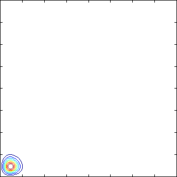

Sample animation

The animation displays the time-dependent probability density of a
very simple interacting chemical system consisting of two species
that comes to rest at steady-state. Although the density itself is
in equilibrium, any realization of the system would be fluctuating
according to this distribution. Note the negative correlation
which comes from the interaction between the two species; if the
number of molecules of one of the species increases, then the
other species will start to disappear from the system due to the
interaction. Note also the different scales present already in
this simple example: the transport along the line x = y is very
fast while the slow diffusion along x y = constant is much slower.
(Plot info: each axis tick is 10 molecules and the contour levels
have been chosen by Matlab)
References
S. Engblom: Spectral Approximation of Solutions to the Chemical
Master Equation, in J. Comput. Appl. Math.
229(1):208--221,
2009: (doi)
S. Engblom: Galerkin Spectral Method applied to the
Chemical Master Equation, in Commun. Comput. Phys.
5(5):871--896,
2009: (abstract), (pdf).
Stefan Engblom
Last modified: Fri Sep 6 14:54:07 CEST 2024